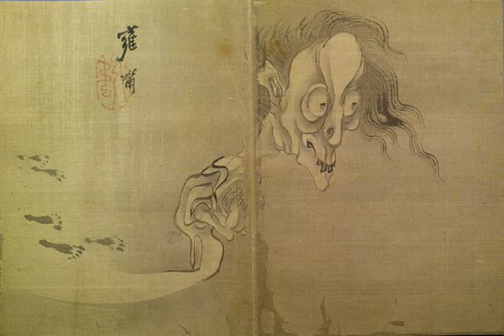

幽霊。全身が痩せており、頭部と手が大きく、胴体は小さい。老人のようで、額まで禿げ上がり、髪は乱れて垂れ下がっている。額は突き出ており、出っ歯で、顎が尖っている。胸元で指を組み合わせている。下半身は消え入るように描かれており、見えない。ただし、幽霊のものと思しき足跡が、幽霊が来た方向に描かれている。
著作者：雍齋／出典：親書誌：U426_nichibunken_0155：東都画家妖怪画帖；トウトガカヨウカイガチョウ／日付：2010／資源識別子：U426_nichibunken_0155_0010_0000
Copyright (c)2010- International Research Center for Japanese Studies, Kyoto, Japan. All rights reserved.